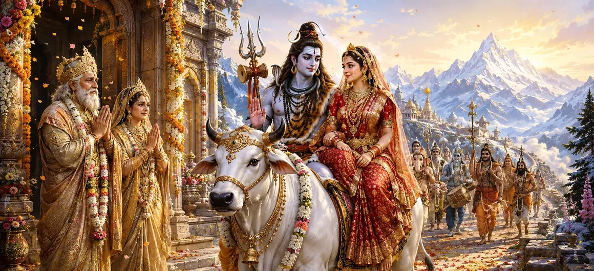

After the divine marriage festivities had been completed and Kāma had been restored through the compassion of Lord Shiva, the time arrived for Shiva and Pārvatī to depart from the residence of Himālaya. The joyful atmosphere became touched with tender sorrow as King Himālaya, Queen Menā, and their family prepared to bid farewell to their beloved daughter. Surrounded by gods, sages, attendants, and celestial beings, the divine couple received their final blessings before beginning their sacred journey.
When all the wedding ceremonies and celebrations had concluded, Lord Shiva respectfully informed Himālaya that the time had come for Him to depart with Pārvatī. Although Himālaya knew that his daughter belonged eternally beside Shiva, the thought of separation filled his heart with deep emotion.
Queen Menā embraced Pārvatī with intense maternal affection. Memories of her daughter’s childhood, devotion, austerities, and determination arose within her heart. Tears flowed from her eyes as she understood that Pārvatī would now leave her parental home and begin her divine household with Lord Shiva.
Menā gently advised Pārvatī to honour her sacred duties with patience, wisdom, and devotion. She asked her to preserve harmony within her new home, respect the attendants of Shiva, and remain the source of compassion and strength for everyone who sought her protection.
King Himālaya approached Shiva and Pārvatī with folded hands. He prayed that their eternal union would remain the foundation of cosmic harmony and requested Lord Shiva to care lovingly for his daughter. Shiva graciously assured Himālaya that Pārvatī was inseparable from Him and eternally united with His own divine being.
Pārvatī bowed respectfully at the feet of Himālaya and Menā. She expressed her gratitude for their love, guidance, and support throughout her life. With tears in her eyes, she promised always to remember their blessings and uphold the values they had lovingly taught her.
Pārvatī’s farewell teaches the importance of gratitude, reverence, and devotion toward one’s parents.
True love remains strong even when loved ones must follow different paths and responsibilities.
The divine departure represents the beginning of Shiva and Pārvatī’s sacred household life.
The attendants of Lord Shiva prepared the magnificent procession for departure. Nandī stood ready before his Lord, while the gaṇas, gods, sages, gandharvas, and celestial musicians assembled around the divine couple. Sacred instruments sounded once again, filling the atmosphere with devotion and auspiciousness.
Every new beginning requires us to honour what came before while courageously accepting the responsibilities ahead. Pārvatī’s departure teaches that gratitude toward our roots and devotion to our chosen path can exist together in perfect harmony.
The residents of Himālaya’s kingdom gathered along the path to witness the departure of Shiva and Pārvatī. They had loved Pārvatī since her childhood and regarded her as the source of prosperity and happiness within their land. Many were unable to restrain their tears as the divine procession prepared to leave.
After offering final salutations to Himālaya, Menā, and the assembled elders, Lord Shiva began His journey with Goddess Pārvatī beside Him. The gods showered celestial flowers upon the divine couple, and auspicious chants echoed across the mountains as the procession slowly moved away from the palace.
“A sacred farewell does not end love; it carries the blessings of the past into the promise of a new beginning.”
After receiving the heartfelt blessings of Himālaya and Menā, Lord Shiva and Goddess Pārvatī departed amid sacred chants, celestial music, and showers of heavenly flowers. Continue to the next chapter to discover the events that unfolded after their divine marriage and departure from Pārvatī’s parental home.